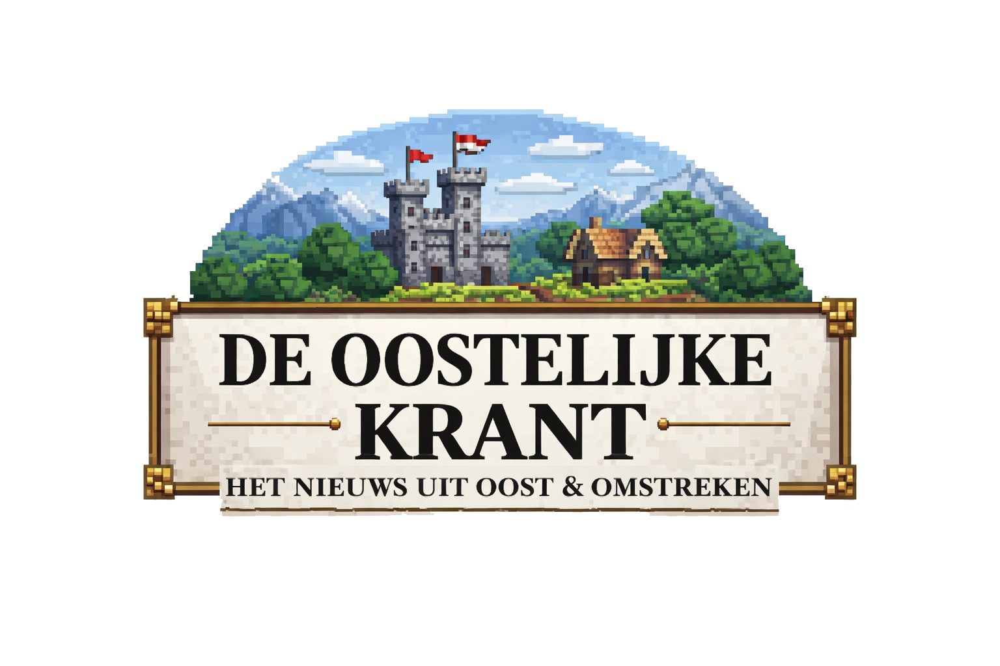
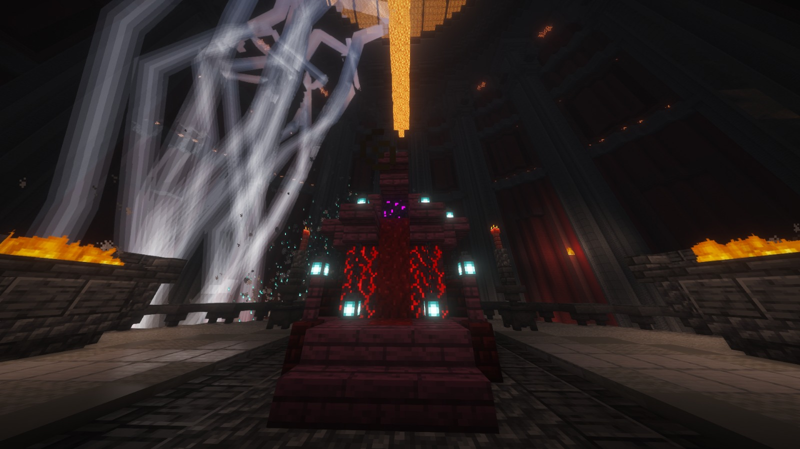
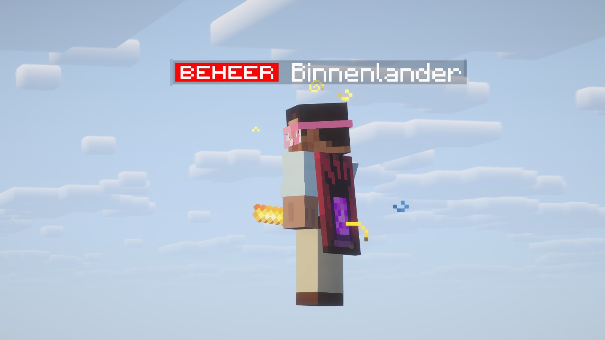
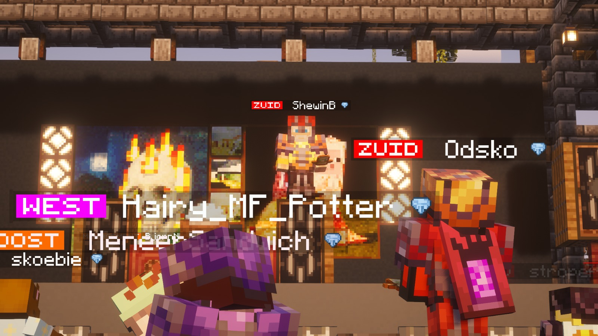
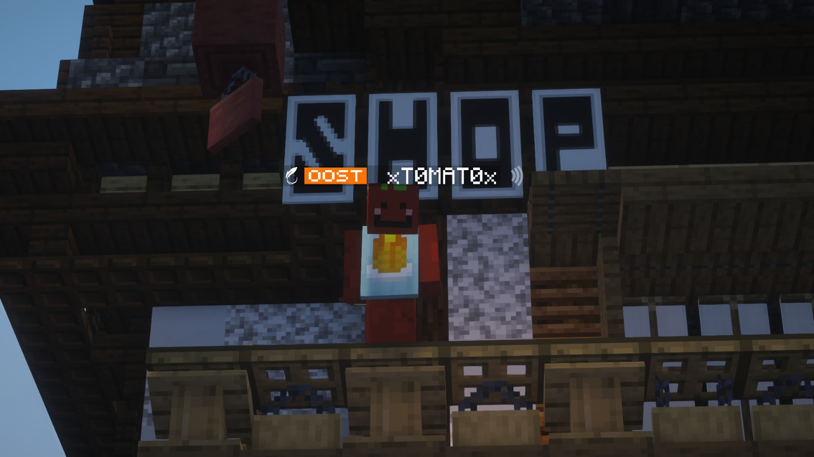

Het nieuws uit Oost & omstreken

De Oostelijke Krant
 JaymianLee
JaymianLeeDe Engel roept de vulkaan op
26-02-2026 · Dossier: dreigboodschap, PvP-zone, bliksem, End-selectie
Om 20:30 werd iedereen door de bandiet gedwongen om naar de vulkaan te gaan. Volgens aanwezigen gebeurde dit in naam van de Engel, met een harde waarschuwing voor afwezigen. De vulkaan is de enige plek op de SMP waar PvP vrij is toegestaan, en daardoor veranderde de oproep meteen in een gespannen machtsmoment.
20:45 - De krant betreedt de vulkaan
Om 20:45 betrad de krant de vulkaan. Op dat moment was nog onduidelijk waarom iedereen exact daar moest verschijnen. In de lokale context werd gemeld dat de Engel de bandieten had verslagen en dat hun eerdere schuilplaats onder de vulkaan inmiddels was vrijgekomen.

21:05 - Bliksem, vuur en Wardens
Om 21:05 sloeg de sfeer om: blikseminslagen, brandhaarden en hoorbare Wardens zorgden voor paniek. ItsJitz_ werd geraakt door lightning en verloor daarbij een totem. De precieze oorzaak van de bliksem is nog niet bevestigd, maar meerdere spelers noemden het een mogelijk voorteken van de Engel.
Speciale End-items voor Aldie_ en odsko
Tijdens de afdaling kregen twee spelers - Aldie_ en odsko - speciale items voor de End. Met die items mogen zij bepalen wie er mee mag naar de End. De uitreiking vond plaats in de binnenkant van de vulkaan, op de plek die door spelers werd beschreven als de voormalige hideout van de bandieten.
Incident: ontvoering van de krant
JaymianLee van de krant werd door Binnenlander ontvoerd en circa 2000 blokken verder gedropt. Of dit een gerichte “drop van de krant” was, blijft onduidelijk. Na een terugtocht te voet keerde de redactie terug in Oost, waar op dat moment al veel onrust heerste.

21:55 - Kantoor vol, daarna gevecht op Oost
Rond 21:55 was het druk in het kantoor van JaymianLee. Er werd gezongen en gedronken en de sfeer was luidruchtig. Later ontstond op Oost, voor het podium van ShewinB, een gevecht tussen ilysnow, stroperig, ixt en appelsap41. Er vielen gewonden, maar geen doden.
22:30 - Vredige slotscène op het podium
Om 22:30 gaf ShewinB een slotoptreden op zijn podium. Het nummer shirt uit en zwaaien werd uit volle borst meegezongen. Spelers deden hun shirt uit en zwaaiden massaal mee.
Volgens aanwezigen was dit het meest vredige moment op de SMP sinds het begin van de Grace-periode. Uit respect voor ShewinB en voor elkaar deden veel spelers hun armor uit.

Advertentie - xT0MAT0x
Na een succesvol avontuur met een online webshop zijn ze op OOST ook een fysieke winkel begonnen. GransmasterLars, de bouwer, heeft de winkel fysiek gerealiseerd.
